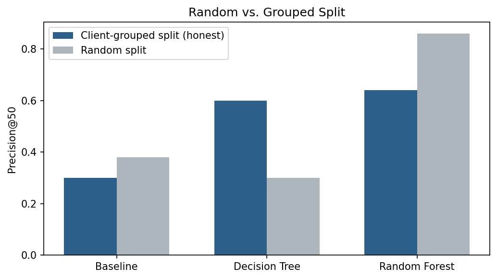
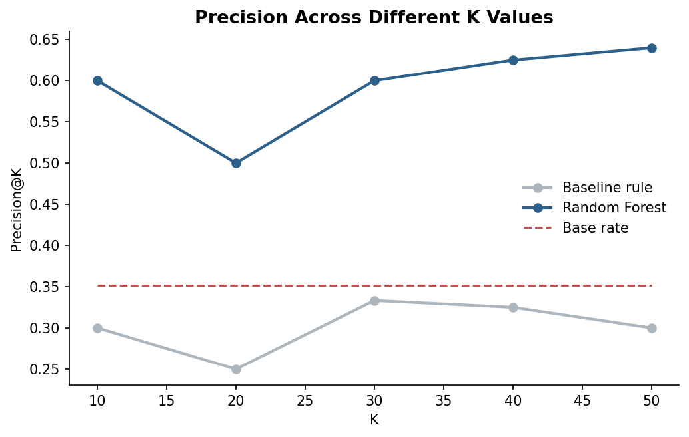
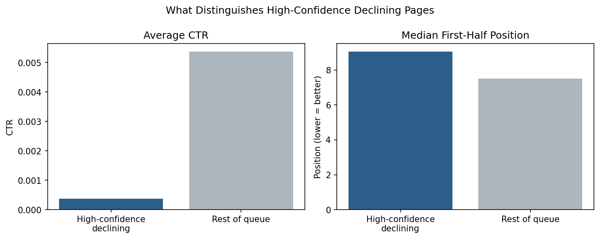

An SEO strategist or content writer working with hundreds or thousands of pages cannot manually review each one; doing so costs an immense amount of time and money. This paper builds a model that produces a ranked list of pages by their likelihood of declining search performance. The model is trained on one month (March 2026) of FlyRank's production search-performance warehouse data. A Random Forest model, evaluated on an honest, client-grouped split, achieved a Precision@50 of 0.64, compared to a hand-written baseline rule's 0.30 at a base rate of 0.352. This ranked queue lets a strategist or writer narrow their review from thousands of pages down to the fifty most worth checking first.
SEO strategists and content writers manage hundreds or thousands of pages at a time. Reviews of these pages are often driven by available data and simple heuristic rules. Traditional, hand-written rules frequently fail in this regard. Manually auditing every article each month is operationally impossible, and a flat threshold rule cannot capture the patterns that actually separate a declining page from a healthy one.
This work trains and validates a machine-learning model that produces a ranked queue of the 50 pages most likely to be declining, ordered by the model's confidence. An SEO strategist or content writer can just check the list for the pages that have the highest potential of declining and will be able to narrow down their review window from hundreds or thousands of pages to a ranked queue of only 50 pages. 50 pages is a workload that fits comfortably into a week of manual review.
A flat rule like high_volume × position_slipped × impressions fails here: the patterns separating declining pages from stable or growing ones are too complex for a simple hand-written rule to capture reliably. A trained model is required to learn these patterns directly from the data.
The label used to mark declining pages, declining_flag, is calculated from the change in impressions between the first and second halves of the month, using a −10% threshold.
The analysis uses the FlyRank warehouse partition fact_content_daily_performance
for March 2026 (month=2026-03). The snapshot is divided into two 15-day
comparative periods:
The pipeline processed 139,747 distinct content–client pairs meeting the following criteria:
gsc_data_available IS TRUE), non-zero baseline impressions
(first_half impressions > 0), and valid position tracking in both time
windows (position_first_half and position_second_half present).gsc_data_available IS FALSE),
zero-baseline-impression records, and incomplete telemetry.the data does not contain any real ids of clients or contents, it rather has pseudonymized client and content ids.
The target variable (declining_flag) is a boolean flag marking pages that
experienced an impression drop of 10% or more from the first half to the second half of
the month:
To model real-world decision-making conditions, all input features are strictly constrained to observations collected during the first half of the month (March 1–15, 2026). No second-half features or target-window telemetry are accessible during feature calculation.
feat_impressions — total impressions in the first half.feat_clicks — total clicks received in the first half.feat_days_active — total days in the first half with recorded impression history.position_first_half — average search position in the first half.feat_ctr — overall click-through rate in the first half.
The binary classification label declining_flag identifies content
experiencing an impression loss exceeding the 10% threshold between the first and second
halves of the month:
To establish a minimal benchmark, a deterministic heuristic rule was implemented. The heuristic prioritizes high-traffic pages experiencing significant position degradation:
Where:
high_volume = 1 if feat_impressions ≥ 500, else 0position_slipped = 1 if position_second_half − position_first_half > 2, else 0This rule follows the same pattern as FlyRank's existing hand-written flags (threshold-based filtering on volume and position), serving as a benchmark to assess whether machine learning provides measurable predictive lift over static rules.
The dataset was split into train and test sets on a client-grouped basis, meaning no
client's pages were present in both splits. This ensures the model cannot memorize
client-specific patterns to inflate its apparent precision. This risk was confirmed
directly: on a random (non-grouped) split, the Random Forest's Precision@50 jumped from
0.64 to 0.86. This precision does not indicate real world performance rather shows memorization of client related patterns.
The grouped split was built using scikit-learn's GroupShuffleSplit at test_size=0.3;
due to the dataset's uneven client sizes, the resulting split ratio was 91.7% / 8.3%.
Two interpretable tree-based classifiers were trained on the grouped training set:
max_depth=4,
class_weight='balanced', chosen to maintain decision transparency and
prevent tree over-expansion.n_estimators=200,
max_depth=4, class_weight='balanced', chosen to ensemble weak
tree learners while maintaining low variance.Both models used random_state=42 for reproducibility.
Evaluation focuses on Precision@50, representing the top 50 highest-risk pages prioritized by each method. In an operational setting, 50 pages aligns with a standard weekly manual review capacity for an SEO strategist or editorial team. Precision@50 measures what proportion of the top 50 flagged pages actually experienced a 10%-or-greater impression decline in the target window.
All methods were evaluated on the same held-out test set under the client-grouped split (11,636 rows, representing entirely unseen client domains).
| Evaluation Method | Precision@50 | Lift over Base Rate | vs. Baseline Rule |
|---|---|---|---|
| Base Rate (random choice) | 35.2% | 1.00× | — |
| Baseline Rule | 30.0% | 0.85× | 1.00× |
| Decision Tree (max_depth=4) | 60.0% | 1.71× | 2.00× |
| Random Forest (n_estimators=200) | 64.0% | 1.82× | 2.13× |


declining_flag is a proxy label defined by the threshold -10% drop in
impressions from the first half to the second half of the month. It is not the ground
truth label and is not a true observed future outcome.
2026-03) of data; results may not generalize to other months or
season-specific patterns.
Pages are flagged for review using two evidence-based reason codes, each derived from comparing the model's highest-confidence predicted-declining pages against the rest of the ranked queue.
| Reason Code | Trigger | Evidence | Action |
|---|---|---|---|
| near_zero_ctr | feat_ctr < 0.001 |
Strong signal: high-confidence declining pages show a mean CTR of 0.000374, roughly 14× lower than the rest of the queue (0.005375). | Review |
| weak_absolute_position | position_first_half > 10.0 |
Soft signal: high-confidence declining pages show a median first-half position of 9.06, versus 7.50 across the rest of the queue. | Review |
Reason codes are assigned only after a page is surfaced in the ranked queue generated from the Random Forest model. Codes can co-occur on a single URL, signaling multiple compound risks.

near_zero_ctr, weak_absolute_position
are hints for where to look, not diagnoses a reviewer should verify the underlying issue actually looks real before acting.weak_absolute_position as equally strong evidence as
near_zero_ctr It is already observed that the CTR threshold shows a clear separation between groups;
the position threshold is more marginal and should be treated as a softer signal.2026-03 scope without re-validation.Every data transformation, model execution, and validation audit in this paper traces directly to committed Jupyter notebooks in the project repository.
hf://datasets/FlyRank/internship-warehouse (partition month=2026-03)random_state=42.Tahir, M. H. (2026). Which Pages Need a Review First? A Data-Driven Priority Queue Built from Search Performance Data. FlyRank ML Internship — Machine-Learning Track.
Built on the FlyRank ML Internship dataset, a real production search intelligence release. Learn more at flyrank.ai.
Thanks to the FlyRank ML internship program for the dataset, the weekly skill guides, and the structured, honesty-first framing this project follows throughout.